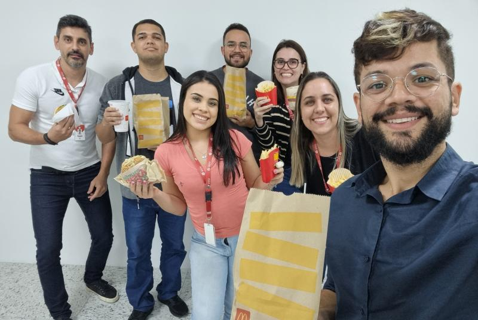

Experiências Profissionais
Analista de Faturamento Jr.
Eudmarco S.A & FCA Log
- Emissão de nota fiscal de importação e exportação (REDEX);
- Nota de débito e boletos via sistema interno (Microled IPA) e bancário;
- Averbação de documentos de importação (D.I., D.T.A., D.S.I.);
- Ordem de faturamento;
- Fatura de aluguel;
- Cálculos de armazenagem;
- Cobrança de clientes faturados e à vista;
- Caixa (baixa de títulos diversos);
- Atendimento ao cliente;
- Relatório gerencial, de fechamento;
- Utilização dos sistemas Microled, TOTVS , Corporate e ATON.

Aprendiz Laboratorista
Bunge Brasil
- Aplicação do 5s no setor;
- Realização de análises no produto (teste de cor, elasticidade, mancha, cinzas, umidade E Ph);
- Realização de análise sobre o nível cloro na água da fábrica;
- Teste de qualidade no produto (Panificação);
- Separação dos aditivos do produto;
- Análise sobre as amostras em shelf-life;
- Descarte das amostras de shelf-life.
Estagiária
Tribunal Regional Eleitoral de São Paulo
- Auxiliar no atendimento ao público;
- Auxiliar no encaminhamento de processos e outros documentos para unidades especificas ou protocolo;
- Auxiliar no desenvolvimento e preparação de expedientes administrativos;
- Auxiliar na operação dos sistemas institucionais informatizados;
- Cadastramento de Biometria;
- Programação das Urnas Eletrônicas;
- Cadastramento e impressão do título de eleitor;
- Auxiliar nas atividades administrativas especificas da Unidade.